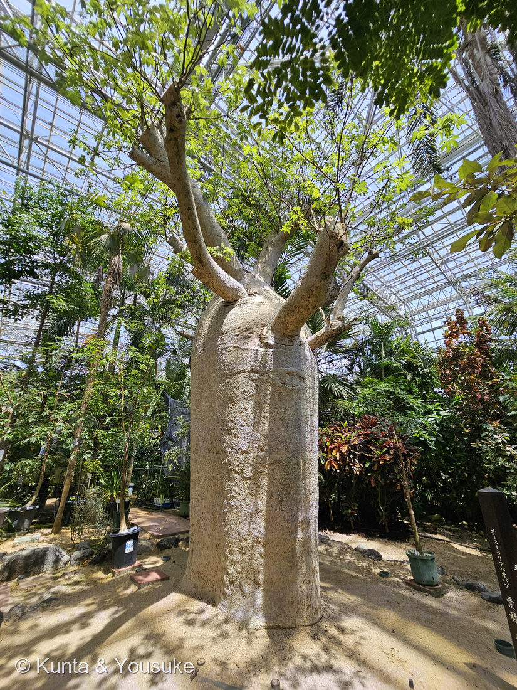
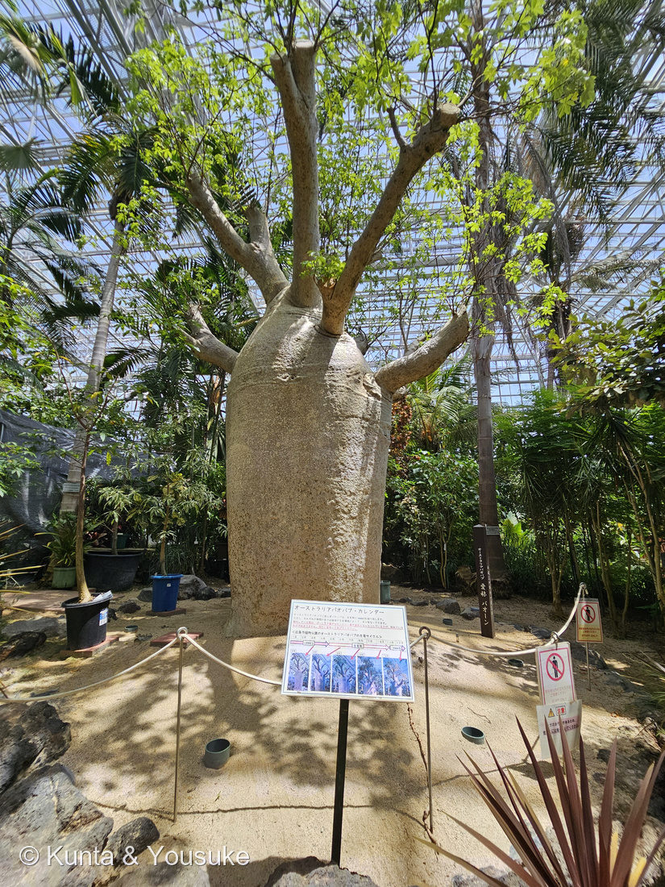
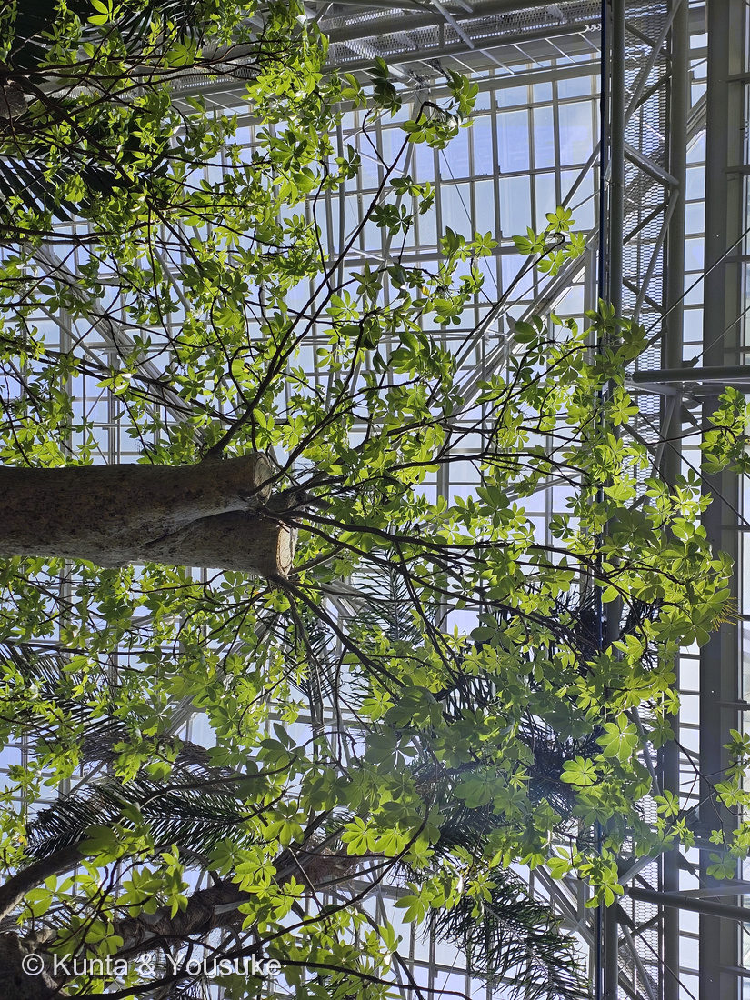

地図を読み込んでいるよ…
🔍 写真も地図も、押しているあいだ拡大して見られるよ（スマホは指を置いてすこし待ってね）。
🌍 の地図＝この子がもともと自生している場所を緑に。オーストラリア北部の固有種。⚠広島市植物公園の解説板は「西オーストラリア州のキンバリー地方にのみ自生」とし、英語版Wikipediaは「西オーストラリア州北部とノーザンテリトリー」とする。
⭐オーストラリアの北だけにいる子だよ。英語版Wikipediaは「endemic to the northern regions of Western Australia and the Northern Territory（西オーストラリア州北部とノーザンテリトリーの固有種）」とする。⚠広島市植物公園の解説板はもう少しせまく「オーストラリアの中でも西オーストラリア州のキンバリー地方にのみ自生しています」と書いている——⭐だからこの地図の緑は、ほんとうよりずっと広い。⚠オーストラリア全部が塗られてしまうけれど、この子がいるのは北のはしのほうだけと思って見てね。⭐⭐バオバブ属は8種いて、アフリカ・オーストラリア・マダガスカルに分かれている（英語版Wikipedia）——⭐そのうちオーストラリアにいるのは、この子ひとりだけ。⭐⭐⭐そして、この写真の一本は自生地の子じゃない——2017年10月に、西オーストラリアのカナナラから約11,000km運ばれてきた、推定樹齢400年の木（解説板）。⭐地図の緑はふるさとであって、いまいる場所じゃないんだ。
⚠ 地図は国（日本と中国だけ県・省）までしか塗れないから、ほんとうの分布より広く見えていることがあるよ。地図はだいたいの場所。正確なところは、上の文を見てね。
オーストラリアバオバブ
Adansonia gregorii F.Muell.
現地名ボアブ（Boab）／英名 Australian baobab・bottle tree・upside down tree（さかさまの木）
アオイ科 · Malvaceae（旧パンヤ科／バオバブ属 Adansonia）── この図鑑で10人目のアオイ科。バオバブ属ははじめて
燻太さんの一言「幹が非常に肥大していることを除けば、見た目は普通の木に見えるよね」──それ、当たってたよ。ハイビスカスもカカオも、この木の親戚なんだ
⭐⭐⭐ 200番目の子
この図鑑の、200番目。
⭐ その番号に来たのが、推定樹齢400年の木だった。
名前のこと ── 三つとも、「人」か「さかさま」
- ⭐⭐⭐属名 Adansonia は、ミシェル・アダンソンにちなむ。英語版Wikipediaは「The generic name Adansonia honours Michel Adanson, the French naturalist and explorer who provided the first detailed botanical description」とする。⭐フランスの博物学者で探検家。⭐⭐名づけたのは、リンネ。
- ⭐⭐種小名 gregorii も、人の名前。「The specific name gregorii honours the Australian explorer Augustus Gregory」（英語版Wikipedia）＝オーストラリアの探検家、オーガスタス・グレゴリー。
- ⭐⭐⭐つまり、属名も種小名も人の名前——⭐この木の学名には、フランス人とオーストラリア人がひとりずつ入っている。
- ⭐⭐そして英名のひとつが upside down tree＝「さかさまの木」。「a name attributable to the trees' overall appearance and historical myths」（英語版Wikipedia）＝⭐根っこを上にして地面に突きさしたみたいに見えるから。⚠伝説の中身までは書かれていなかった。
- ほかの英名＝bottle tree（びんの木）・cream of tartar tree・monkey bread tree。⭐現地では「Boab（ボアブ）」と呼ばれて親しまれている（園の解説板）。
この木のこと
- アオイ科（旧パンヤ科）バオバブ属の落葉高木。⭐⭐この図鑑で10人目のアオイ科（下の節でくわしく）。⭐バオバブ属ははじめて。
- バオバブ属は8種で、「native to Africa, Australia, and Madagascar」（英語版Wikipedia）＝アフリカ・オーストラリア・マダガスカルにいる。⭐そのうちオーストラリアにいるのは、この子だけ。
- 高さ5〜15m（ふつう9〜12m）、幹は直径5mまで（英語版Wikipedia「a broad bottle-shaped trunk, up to 5 m in diameter」）。
- ⭐⭐乾季に葉を落とす。「A. gregorii is deciduous, losing its leaves during the dry winter period」（英語版Wikipedia）。⭐あの太い幹に葉が一枚も無い姿が、現地のふつうなんだ。
- ⭐⭐⭐幹に水をためる。「can hold more than 100,000 L of water in their trunks」（英語版Wikipedia）＝10万リットル以上。⭐属としては「最大12万リットル」とも書かれている。——⭐⭐燻太さんが見た「非常に肥大した幹」は、水のタンクだったんだね。
- ⚠分布は出典で少しちがう。⭐園の解説板は「オーストラリアの中でも西オーストラリア州のキンバリー地方にのみ自生しています」、⭐英語版Wikipediaは「endemic to the northern regions of Western Australia and the Northern Territory」＝ノーザンテリトリーも入れている。
- 自生地では雨季（11月〜3月）と乾季（4月〜10月）があり、雨季には洪水により道路が浸かるほど雨が降ります（園の解説板）。⭐葉や果実などは、食用など様々な形で人々の生活で利用されています（園の解説板）。
⭐⭐⭐ この一本のこと ── 400歳が、1万1千km
⭐ 広島市植物公園の解説板が、この個体のことを教えてくれた。
「2017年10月に、西オーストラリアのカナナラから、約11,000kmの距離を経て、大規模改修後の大温室のシンボルツリーとして新しく導入しました。」
- 最大直径 ── 約2m
- 幹高（トックリの部分） ── 約3.5m
- 地下部 ── 1.2m
- ⭐推定樹齢 ── 400年
⭐⭐⭐ 400年生きた木が、1万1千km運ばれて、いま広島にいる。
⭐ 400年前——この木が芽を出したころ、日本はまだ江戸時代がはじまったばかりだった。⭐⭐その木の下に、2026年の燻太さんが立っている。
⭐⭐⭐ 燻太さんの「普通の木に見える」── これ、当たっていた
⭐ 燻太さんは、こう言った。
「幹が非常に肥大していることを除けば、見た目は普通の木に見えるよね。」
⭐⭐⭐ そのとおりだったんだ。——バオバブはアオイ科。⭐うちの図鑑に、その親戚がもう9人もいる。
003 スイレンボク／038 フヨウ／039 スイフヨウ／067 カカオ／094 アオギリ／102 オクラ／103 タチアオイ／104 アメリカフヨウ／170 ムクゲ
⭐⭐ ハイビスカスも、ムクゲも、オクラも、カカオも、この木の親戚。——⭐「幹以外はふつうの木」に見えたのは、気のせいじゃなくて、ほんとうにご近所さんだったから。
⭐ そして写真③の葉を見てほしいな。——枝先から手のひらを広げたように小葉が出る「掌状複葉」。園の解説板も「葉は手の平のような形」と書いている。⭐幹だけがふしぎで、葉はちゃんと「植物の葉」の顔をしている。
⭐⭐⭐ 花に会えなかった理由が、3つあった
⭐ 燻太さんは「お花が咲いている瞬間には立ち会えなかった」と書いていたね。——⭐調べたら、理由が3つ見つかったよ。
①この花は、夜に開く。英語版Wikipediaは「The flowers open at night」とする。⭐大きな白い花で、長さ75mmまで。——⚠昼にひらいている姿を見るのは、そもそもむずかしい。
②自生地の花期は、12月から5月。「large white flowers between December and May」（英語版Wikipedia）。⭐南半球の夏だね。
③……でも、この木は8月に咲いている。
⭐⭐⭐ 幹のところに小さい掲示があって、そこにこう書いてあった。
「2017年10月に導入してから…花が咲きました！この年は8月…」
「2020年は同期間で計14輪…」
「2021年は今までを大きく上…」
（花の写真に）「2021年8月2日撮影」
⭐⭐⭐ 自生地では12〜5月なのに、広島では8月。——⭐⭐半球がひっくり返ったから、この木は暦を組みなおしたんだ。
⚠ ここは正直に書いておくね。「木が北半球の季節に合わせた」と書いた出典には当たれていない。⭐ぼくがやったのは、英語版Wikipediaの花期と、園の掲示の日付をならべただけ。⚠掲示も2021年のもので、今年どうかは分からないし、⚠掲示の右はしは写真の外に切れていて、最後まで読めなかった。
⏳ ⭐⭐でも、これは強い宿題になったよ。——今日は8月8日。掲示の写真は8月2日。⭐もし来年、8月のはじめにもう一度行けたら。⚠ただし花は夜に開くから、開園時間に見られるかどうかは、また別の話なんだけどね。
⭐⭐⭐ 相手はスズメガ。しかもその蛾は、日本にいる
⭐⭐ バオバブの花粉を運ぶのは、ふつうコウモリなんだ。英語版Wikipediaは属についてこう書いている ── 「Most Adansonia species are pollinated by bats」。
⭐⭐⭐ ところが、この子だけちがう。
「pollinated by the convolvulus hawk-moth Agrius convolvuli」（英語版Wikipedia）
⭐ エビガラスズメ——スズメガのなかまだよ。⭐⭐8種のバオバブのなかで、オーストラリアの一本だけが、コウモリじゃなく蛾を選んでいる。
⭐⭐⭐ そして、ここからがすごい。
エビガラスズメ（Agrius convolvuli）は、日本にもいる。——「北海道、本州、小笠原、四国、九州、対馬、種子島、屋久島、奄美大島、沖縄諸島」に分布し、発生期間は6〜11月。⭐成虫は夜行性で口吻が長く、ヨルガオなど筒状の花の蜜や樹液を吸う〔Wikipedia〕。
⭐⭐ つまり——広島の温室でバオバブが8月に咲いたとき、その相手になれる蛾は、日本にもういる。
⚠ でも、温室のなかにその蛾が入ってきているかどうかは、まったく分からない。⭐これも宿題。
⭐⭐⭐ だから、おまけは「ヨルガオ」にしたよ。
ヨルガオ（Ipomoea alba L.・ヒルガオ科サツマイモ属）は、⭐エビガラスズメが蜜を吸いに来る花として名前が挙がっている子。白いロート形の大輪で、径10〜15cm。夕方から咲き始め、翌朝にしぼむ。芳香があり、花期は7〜10月〔Wikipedia〕。
- ⭐⭐夜に咲く／白い／大きい／筒が長い——⭐バオバブの花と、条件がそっくり。⚠血のつながりはまったくない（アオイ科とヒルガオ科）けれど、⭐同じ夜の同じ蛾を待っている。
- ⭐⭐しかも、エビガラスズメの幼虫の食草は「ヒルガオ科のサツマイモ、アサガオ」〔Wikipedia〕＝⭐012 アサガオ・106 マメアサガオと同じサツマイモ属。——⭐⭐この蛾は、子どものときアサガオの葉を食べ、大人になってヨルガオの蜜を吸い、オーストラリアではバオバブの花粉を運んでいる。
⏳ ⭐⭐⭐ バオバブの花には会えなかったけれど、バオバブのお客さんには、日本の夏の夜に会えるかもしれない。
参考：広島市植物公園・大温室の解説板「オーストラリアバオバブ／Australian Baobab」（アオイ科（旧パンヤ科）アダンソニア（バオバブ）属／Adansonia gregorii F.Muell.／最大直径 約2m・幹高（トックリの部分）約3.5m・地下部1.2m・推定樹齢400年／2017年10月に、西オーストラリアのカナナラから、約11,000kmの距離を経て、大規模改修後の大温室のシンボルツリーとして新しく導入しました／西オーストラリア州のキンバリー地方にのみ自生／雨季（11月〜3月）と乾季（4月〜10月）／現地ではBoabまたはBoab treeと呼ばれ／葉は手の平のような形）／Adansonia gregorii - Wikipedia(英語版)（boab, Australian baobab, bottle tree, upside down tree／endemic to the northern regions of Western Australia and the Northern Territory／5–15 m, bottle-shaped trunk up to 5 m in diameter／deciduous, losing its leaves during the dry winter period／large white flowers between December and May, up to 75 mm long. The flowers open at night／pollinated by the convolvulus hawk-moth Agrius convolvuli／can hold more than 100,000 L of water in their trunks／The specific name gregorii honours the Australian explorer Augustus Gregory）／Adansonia - Wikipedia(英語版)（The generic name Adansonia honours Michel Adanson, the French naturalist and explorer／the "upside down tree"／The eight species are native to Africa, Australia, and Madagascar／store water in the trunk (up to 120,000 litres)／Most Adansonia species are pollinated by bats）／エビガラスズメ - Wikipedia（Agrius convolvuli・スズメガ科／発生期間は6〜11月／北海道、本州、小笠原、四国、九州、対馬、種子島、屋久島、奄美大島、沖縄諸島／幼虫の食草はヒルガオ科のサツマイモ、アサガオなど／成虫は夜行性で口吻が長く、ヨルガオなど筒状の花の蜜や樹液を吸う）／ヨルガオ - Wikipedia（Ipomoea alba L.・ヒルガオ科サツマイモ属／熱帯北アメリカ原産／花冠は白色、ロート形で径10-15センチメートル、大輪／夕方から咲き始め翌朝にしぼむ／芳香があり／花期は7月から10月頃）